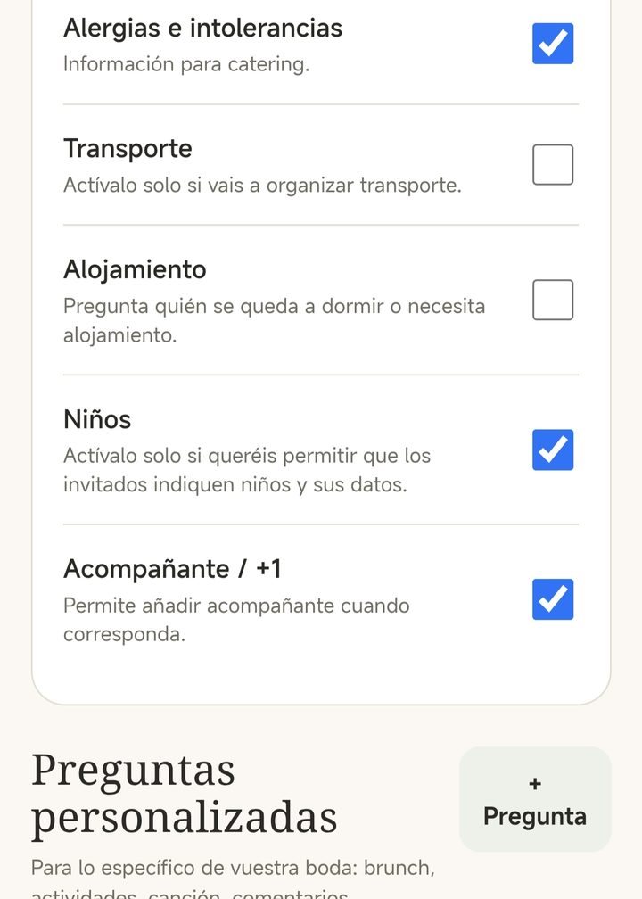

Confirmación de asistencia de la boda: cómo pedirla y que respondan
Pedir que confirmen parece fácil hasta que, a tres semanas de la boda, os faltan cuarenta respuestas y el catering os pide números. Esto es lo que mejor funciona para que respondan a tiempo.
Qué preguntar
Cuanto más preguntéis de una vez, menos tendréis que perseguir después. Pero cada pregunta de más es una razón para dejarlo para luego, así que quedaos con lo que de verdad vais a usar:
- Si viene o no, y quién de la familia o la pareja.
- El menú de cada persona, si hay que elegir.
- Alergias e intolerancias.
- Niños: cuántos y de qué edad, si cambia el menú o hacen falta tronas.
- Autobús, si lo ofrecéis, y desde qué parada.
- Alojamiento, si habéis reservado habitaciones.
- Una canción para la fiesta. Es opcional, pero a la gente le encanta y anima a contestar.

Qué fecha límite poner
Una fecha concreta funciona mucho mejor que un «confirmad cuanto antes». Lo más práctico suele ser pedirla unas cuatro o cinco semanas antes de la boda: deja margen para recordarlo a quien no conteste y para cerrar las mesas antes de que el catering os pida los números definitivos.
Un mensaje para pedirla
Si enviáis la invitación por WhatsApp, acompañadla de un mensaje corto y personal. Por ejemplo:
«¡Hola, Lucía! Te mandamos la invitación de nuestra boda. Nos haría muchísima ilusión que vinieras. Cuando puedas, confírmanos desde la propia invitación antes del 15 de mayo, que el catering nos pide los números. ¡Un beso!»
Funciona porque es personal, dice qué hay que hacer, da una fecha y explica por qué la necesitáis.
Cómo recordarlo sin agobiar
- Un recordatorio una semana antes de la fecha límite, solo a quien no ha contestado.
- Que lo mande quien conoce al invitado. A tu tía le escribes tú; a sus amigos, tu pareja.
- Para los últimos, una llamada. A estas alturas suele ser más rápido que otro mensaje.
- Nunca en grupos de WhatsApp: nadie se da por aludido.
Cómo tenerlo todo ordenado
El problema casi nunca es que no contesten, sino que las respuestas llegan por WhatsApp, por llamada, en persona en una comida familiar… y acaban en tres sitios distintos. Elegid un único lugar donde apuntarlo todo, sea una hoja de cálculo compartida o una app, y que los dos podáis verlo y actualizarlo.
Con las respuestas ordenadas, el siguiente paso es el reparto en mesas. Lo explicamos en la guía sobre cómo hacer el plano de mesas de la boda.